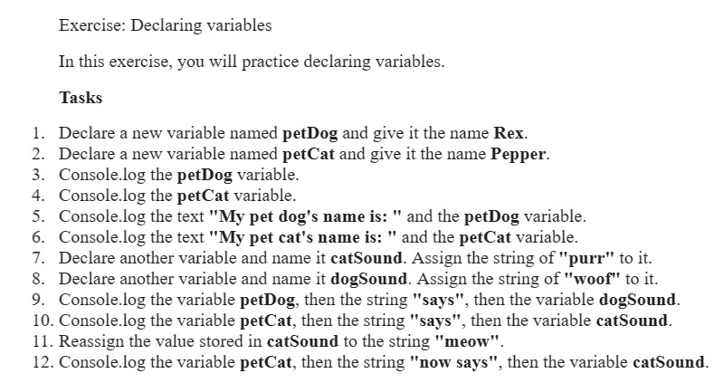

Check the console for outputs
JS-DAY2 / 25-06-2024
TASK LIST

Task 1
Store the following into variables: geographic location, job title.
Output your fortune to the screen like so: "You will be a job title in geographic location.
Task 2
On a single line, declare three variables with the given names and values: firstName = "Ram" lastName = "Kumar" age = 30.
Task 3
Age Calculator
Want to find out how old you'll be? Calculate it!
Store your birth year in a variable.
Store a future year in a variable.
Calculate your 2 possible ages for that year based on the stored values.
For example, if you were born in 1988, then in 2026 you'll be either 37 or 38, depending on what month it is in 2026.
Output them to the screen like so: "I will be either NN or NN in YYYY", substituting the values.
Task 4
Ever wonder how much a "lifetime supply" of your favorite snack is? Wonder no more!
Store your current age into a variable.
Store a maximum age into a variable.
Store an estimated amount per day (as a number).
Calculate how many you would eat total for the rest of your life.
Output the result to the screen like so: "You will need NN to last you until the ripe old age of X".